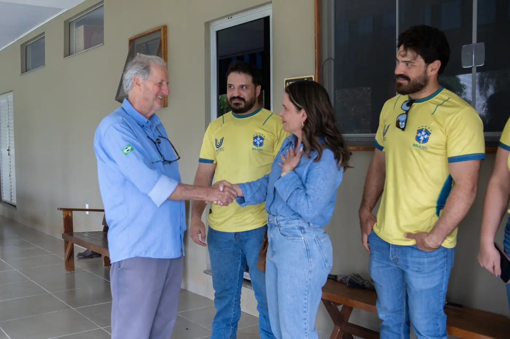
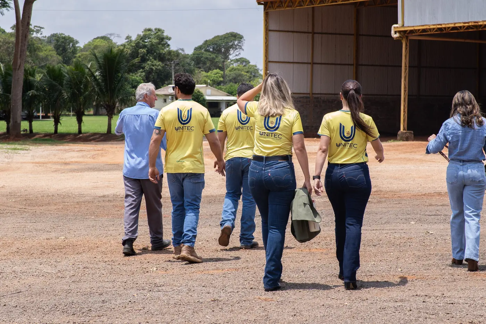
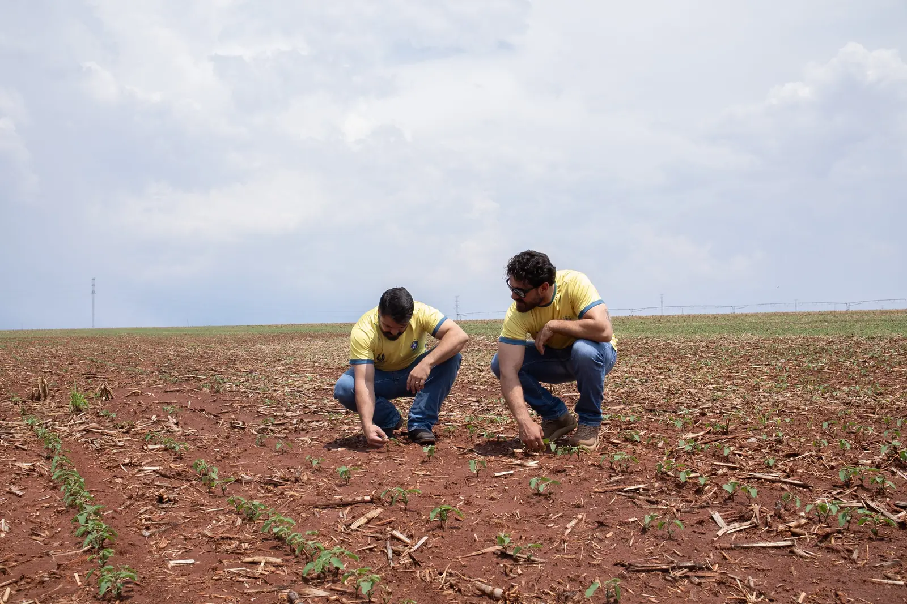

O número da fazenda em dia, antes de cada decisão.
- Livro caixa e imposto de renda
- Planejamento e defesa tributária
- ITR, CAR, CCIR e certidões
Terra, lavoura, venda e família, do que já aconteceu ao que vem pela frente. Gestão contábil do produtor rural, em Jataí desde 1991.
A equipe da Unitec, em Jataí.
Três gerações na sociedade.
35 anos ao lado de famílias produtoras, com a mesma conta da fazenda em cada estado.
A contabilidade comum registra o que já aconteceu. A Unitec olha a fazenda em quatro camadas e prepara a próxima decisão.
Embaixo dela estão as quatro camadas que decidem o resultado. Role a página para abrir uma por uma.
Documentos da terra e do produtor, livro caixa e obrigações em dia. Sem a base em ordem, nenhuma decisão é segura.
Custo por hectare, resultado por safra, comprar ou arrendar, vender agora ou travar. A Unitec compara os caminhos e recomenda. A decisão continua sendo da família.
Imposto planejado antes da venda, contratos revisados, Funrural e a reforma de 2027 no cálculo. Proteção é prevenção, não medo.
Holding, acordo entre sócios e sucessão desenhados com quem construiu e com quem vai continuar, antes que a necessidade chegue.
É assim que a Unitec olha a sua fazenda: do documento da terra à próxima geração, com o número de cada decisão na mesa.
Ver como cada frente trabalhaEscolha por onde começar. Cada frente tem a sua página, com o que resolve e o que entra.
O número da fazenda em dia, antes de cada decisão.

A fazenda passa inteira, com a decisão combinada em vida.

A conta do caixa antes da escolha do regime.
Número com fonte e hora, como num painel de bolsa. Ao lado de cada um, o que ele muda na decisão.
atualizado às 19h25 Dólar do Banco Central lido ao abrir a página · Cepea/Esalq, indicador de 30/10 · bolsas internacionais com atraso
R$5,4212
0,87% sobre a PTAX de 29/10
últimos 45 dias
Dólar mais alto melhora a saca em reais e encarece adubo e defensivo. Vale comparar antes de fechar a compra de insumo.
158,88R$/sc
4,44% sobre o indicador de 21/10
Na conta da fazenda vale o preço da sua praça, já com o frete. É ele que se compara ao custo por hectare antes de travar.
65,64R$/sc
2,08% sobre o indicador de 21/10
O milho do sudoeste costuma sair abaixo desta referência, pelo frete. Ela mostra a direção do preço da safrinha.
389,90R$/@
2,50% sobre o indicador de 21/10
A arroba em Goiás tem cotação própria. A referência paulista mostra para onde o mercado está indo.
13,75% a.a.
0,25 p.p. em vigor desde 17/09/2026 (corte de 0,25 ponto percentual)
último ano
Orienta o custo do crédito a juro de mercado e o rendimento do caixa aplicado. O crédito do Plano Safra tem taxa própria.
O Cepea não respondeu na última leitura.
| Contrato | Preço | Var. |
|---|---|---|
| Soja, ChicagoUS$/bushel | 12,34 | 0,04% |
| Milho, ChicagoUS$/bushel | 4,48 | 0,78% |
| Trigo, ChicagoUS$/bushel | 6,04 | 0,04% |
| Café, Nova YorkUS$/libra-peso | 2,87 | 0,02% |
| Algodão, Nova YorkUS$/libra-peso | 0,78 | 2,58% |
| Petróleo BrentUS$/barril | 113,43 | 2,37% |
| Indicador | Valor | Var. |
|---|---|---|
| Dólar PTAXR$ · 30/10 | 5,4212 | 0,87% |
| Euro PTAXR$ · 30/10 | 6,0522 | 0,87% |
| Selic, meta% ao ano · 04/11 | 13,75 | 0,25 p.p. |
| IPCA em 12 meses% · 01/09 | 4,58 | 0,36 p.p. |
Fontes: Cepea/Esalq (licença CC BY-NC), Banco Central do Brasil e cotações internacionais com atraso. Preço de referência: na fazenda vale o preço da sua praça, já com o frete.
23°C
Nublado
mín 20°máx 30°
Chance de chuva hoje: 100% · 31 mm nos próximos 6 dias
Open-Meteo, previsão por modelo · leitura das 19h15. Previsão é estimativa.
Um canal no WhatsApp com o que muda a conta da fazenda, todo dia útil, em poucas linhas e com a fonte junto.
Gratuito, e sai quando quiser. Endereço do canal a confirmar.
A decisão que esta notícia melhora é o fechamento de 2026. Com três números na mesma mesa, o custo por hectare da própria fazenda, o quanto já está vendido e por quanto,…
A decisão que esta notícia melhora é o que fazer com o passado. Antes de qualquer tese, saber em que situação a fazenda está no Funrural de 2017 para trás: pagou, parcel…
A decisão que esta notícia melhora é a do próximo lote vendido antecipado. Antes de travar o preço, conferir se o contrato diz como fica a CBS na entrega de 2027. É uma …

A Unitec cuida do que já foi registrado com os olhos no que vem: a reforma tributária muda a conta da fazenda até 2033.
A Unitec nasce em Jataí.
A Renata chega, aos 20 anos. A sede da Avenida Goiás é construída.
A Renata se torna sócia.
A decisão de atender só o produtor rural.
35 anos. A terceira geração na sociedade e agentes de inteligência artificial no escritório.
CNPJ do produtor e início da CBS.
O ICMS diminui e o IBS cresce, ano a ano.
A reforma completa. As decisões de agora já entram nessa conta.
O que está marcado "a confirmar" é número declarado pela própria Unitec e entra no site depois de conferido.
| Em Jataí desde | 19 de outubro de 1991 |
|---|---|
| Atende só o produtor rural desde | 1998 |
| Gerações na sociedade | Três |
| Famílias atendidas | Mais de 1.000a confirmar |
| Área acompanhada | 5 milhões de hectaresa confirmar |
| Estados atendidos | 7: GO, MT, MS, TO, PA, MG e SPa confirmar |
| Responsável técnica | Renata Oliveira, contadora |
Comprar, vender, arrendar, passar a fazenda para os filhos, entrar no regime novo. A conversa começa pelo WhatsApp, por telefone ou no escritório.